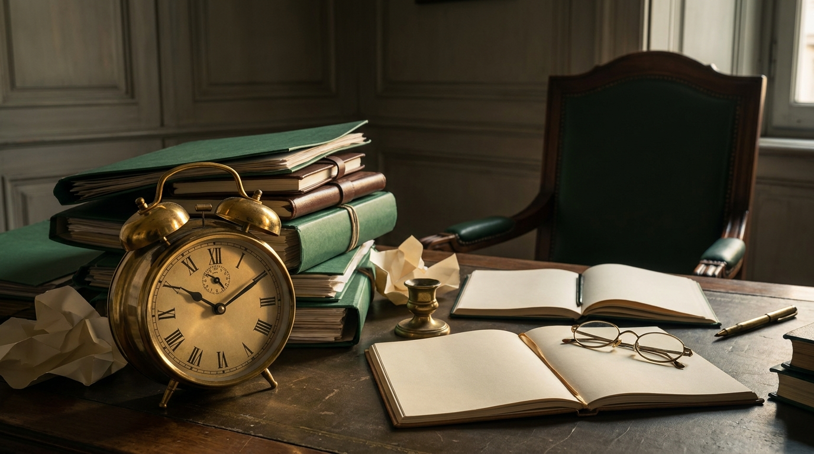

Straining: quando lo stress da lavoro fa scattare il risarcimento
Non serve una persecuzione sistematica per ottenere un risarcimento. Anche una singola condotta stressante, se incide sulla salute del lavoratore, può fondare la responsabilità del datore. È il fenomeno dello straining, che la Cassazione distingue dal mobbing e riconduce all'obbligo di sicurezza previsto dall'art. 2087 del Codice civile.

Il fatto e perché conta
Lo stress legato all'attività lavorativa non è sempre fisiologico. Quando supera una soglia critica e produce un danno alla salute, può tradursi in responsabilità del datore di lavoro. La giurisprudenza ha coniato il termine straining per descrivere situazioni di pressione e tensione che, pur non raggiungendo la sistematicità del mobbing, ledono comunque l'integrità psicofisica del dipendente.
La distinzione non è accademica. Determina infatti cosa il lavoratore deve provare per ottenere un risarcimento e quali tutele può far valere.
Inquadramento normativo
Il perno è l'art. 2087 c.c., secondo cui l'imprenditore è tenuto ad adottare le misure necessarie a tutelare l'integrità fisica e la personalità morale dei lavoratori. Si tratta di una norma di chiusura: impone un obbligo di sicurezza ampio, non limitato alle sole prescrizioni antinfortunistiche tipizzate.
Su questa base, la Cassazione Civile ha elaborato la nozione di straining come forma attenuata di stress forzato sul posto di lavoro. A differenza del mobbing, che richiede una pluralità di condotte vessatorie reiterate nel tempo e una finalità persecutoria (l'intento di emarginare il dipendente), lo straining può configurarsi anche con un singolo episodio, purché produca effetti duraturi e dannosi sulla condizione lavorativa.
In altri termini: nel mobbing conta la sistematicità persecutoria; nello straining conta l'effetto stressante e il nesso con il danno alla salute. La responsabilità aziendale si configura quindi anche in assenza di una campagna vessatoria organizzata.
Implicazioni pratiche
Per il lavoratore, lo straining abbassa la soglia probatoria. Dimostrare il mobbing è notoriamente difficile, perché impone di provare la reiterazione e l'intento persecutorio. Lo straining richiede invece di provare la condotta stressante, il danno alla salute (documentato in sede medica) e il collegamento causale tra i due elementi.
Resta a carico del lavoratore l'onere di allegare e provare il pregiudizio subito e la riconducibilità all'ambiente di lavoro. Non basta lamentare un generico malessere: serve un quadro clinico e una ricostruzione fattuale coerente.
Per il datore di lavoro, il messaggio è netto. L'obbligo dell'art. 2087 c.c. non si esaurisce nel rispetto delle norme di sicurezza formali. Comprende anche l'organizzazione del lavoro, i carichi assegnati, le modalità di gestione del personale. Una riassegnazione di mansioni penalizzante, un demansionamento, condizioni operative deliberatamente gravose possono integrare straining e generare obbligo risarcitorio.
La responsabilità è di natura contrattuale: deriva dalla violazione di un obbligo del rapporto di lavoro. Questo incide sui termini di prescrizione e sulla distribuzione degli oneri probatori, generalmente più favorevole al lavoratore rispetto alla responsabilità extracontrattuale.
Cosa fare in concreto
Se sei un lavoratore:
- Documenta tempestivamente ogni condotta rilevante: email, ordini di servizio, modifiche di mansione, comunicazioni interne.
- Rivolgiti a un medico per far emergere e certificare l'eventuale danno alla salute e la sua origine professionale.
- Conserva traccia del contesto organizzativo (orari, carichi, isolamento) che ha generato la situazione stressante.
Se sei un datore di lavoro:
- Verifica che l'organizzazione del lavoro e l'assegnazione delle mansioni non producano condizioni penalizzanti ingiustificate.
- Predisponi procedure interne di segnalazione e gestione dei conflitti, documentando le misure adottate.
Consigliamo, in entrambi i casi, di far valutare la singola fattispecie da un professionista prima di assumere iniziative: la qualificazione tra straining, mobbing o mero disagio incide in modo decisivo sull'esito di un eventuale contenzioso.
Conclusione
La nozione di straining riflette un principio chiaro: la tutela della salute sul lavoro non dipende dall'esistenza di una persecuzione organizzata, ma dall'effettivo pregiudizio subìto. L'art. 2087 c.c. impone al datore un dovere di protezione esteso, e la sua violazione apre la strada al risarcimento anche quando manca la reiterazione tipica del mobbing.
---
*Contributo informativo a cura di Tamburro & Partners - Avv. Giuseppe Tamburro. Non costituisce parere legale.*
Ogni storia di lavoro ha i suoi tempi.
Se gestisci HR e vuoi un confronto su contenzioso, ispezioni o licenziamenti, scrivi allo studio. Ti rispondiamo entro un giorno lavorativo.